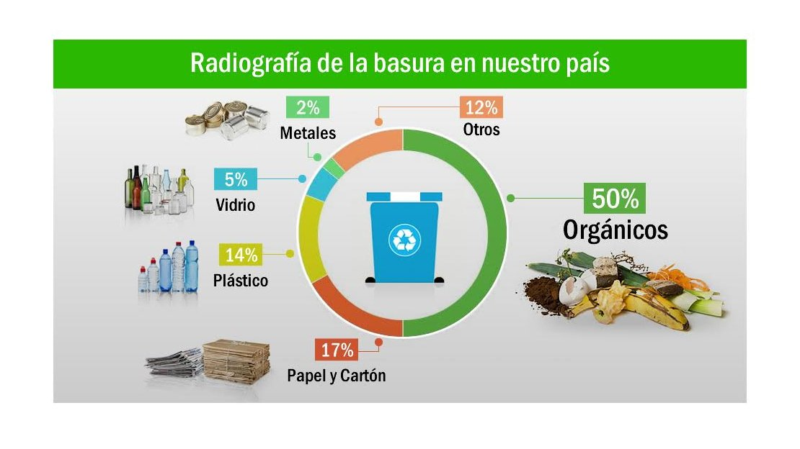

RECICLANDO JUNTOS
3R -REDUCIR -RECICLAR -REUTILIZAR
Amparo Junquet y Martina Baldassare alumnas del colegio oakhill
REDUCIR:se debe tratar de simplificar el consumo de productos directos, aquellos que se compra y consume.
REUTILIZAR:volver a utilizar las cosas y darles la mayor utilidad posible antes de que llegue la hora de deshacernos de ellas.
RECICLAR:someter los materiales a un proceso en el cual se puedan volver a utilizar, reduciendo de forma verdaderamente significativa la utilización de nuevos materiales, y con ello, mas basura en un futuro.

Siempre hemos producido residuos como sociedad, pero es ahora, y en la sociedad de consumo en la que vivimos desde hace años, cuando el volumen de las basuras ha crecido de forma desorbitada y acumulativa, incrementado su toxicidad hasta convertirse en un gravísimo problema medio ambiental.
Para reducir la cantidad de basura que generamos en nuestro planeta, nosotros recomendamos que cumplan con la regla de las tres erres.Asi, juntos, vamos a poder vivir en un planeta mas limpio y saludable.
TIPS PARA APLICAR